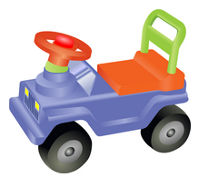
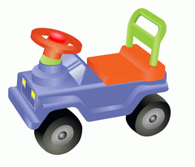
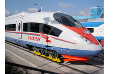
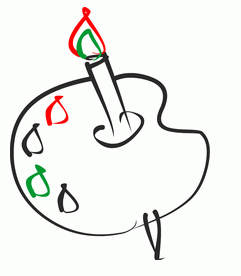

В этом случае можно использовать два формата png или gif. Jpg здесь не подойдет т.к. в нем лучше всего сохранять сложные изображения, с насыщенными цветами. Изображение поддерживается форматом гиф . А так же поддерживает прозрачность в этом изображении. PNG формат будет еще лучше. И в дальнейшем png можно сжать, чтобы уменьшит обьем изображения.
 Здесь пойдут форматы jpg и png. В изображении используется широкий спект цветов и мы не можем использовать gif. Jpg и png являются лучшими форматами для изображений с широкой цветовой гаммой. В данном случае лучше всего подойдет формат jpg поддерживает все необходимые цвета и получается небольшой размер файла. Изображение без прозрачности.
Для этого изображения лучше всего подойдет gif. Это изображение не имеет большого кол-ва цветов. Можно сделать прозрачный фон и по объему получится небольшй файл.
